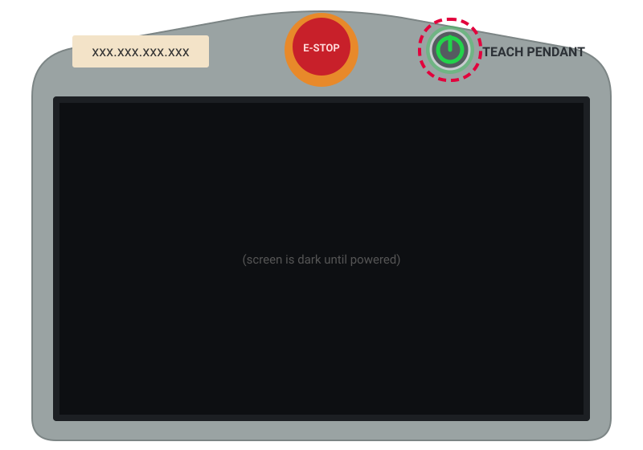
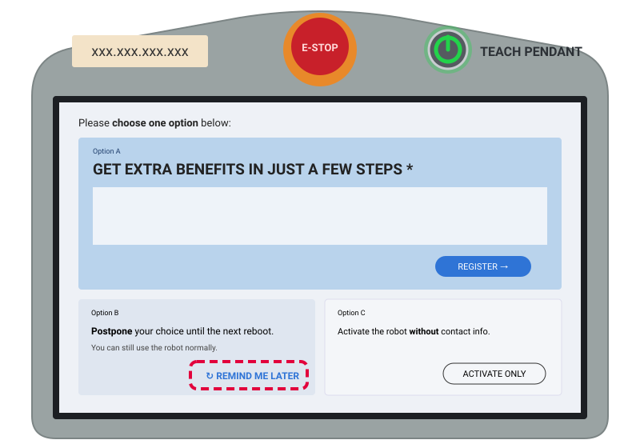
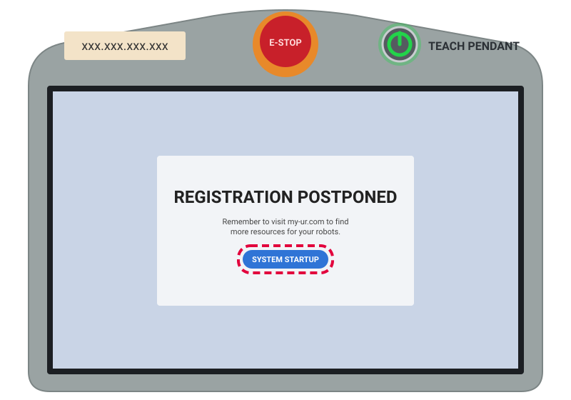
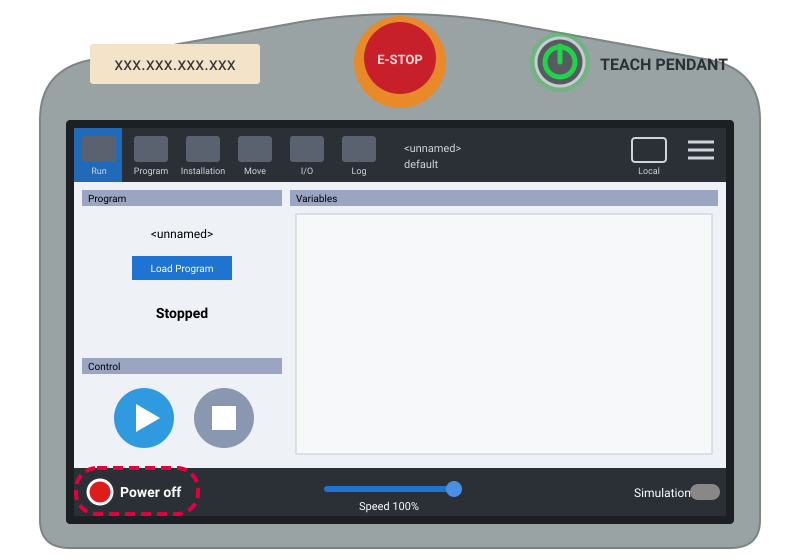
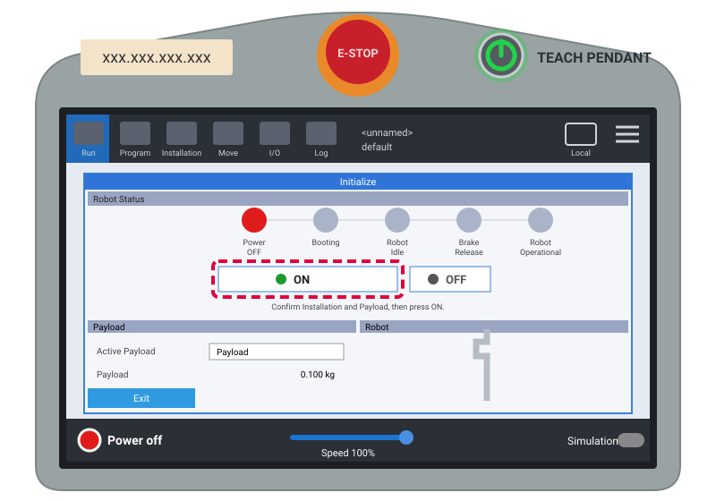
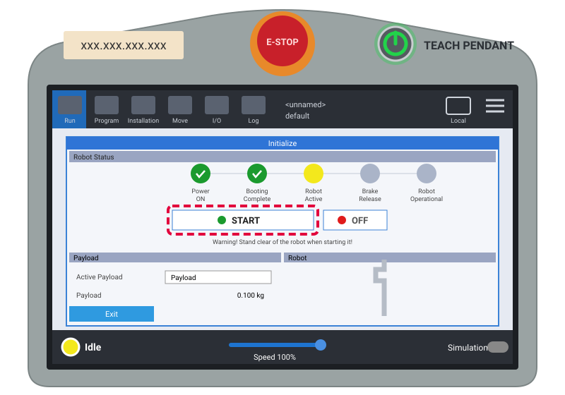
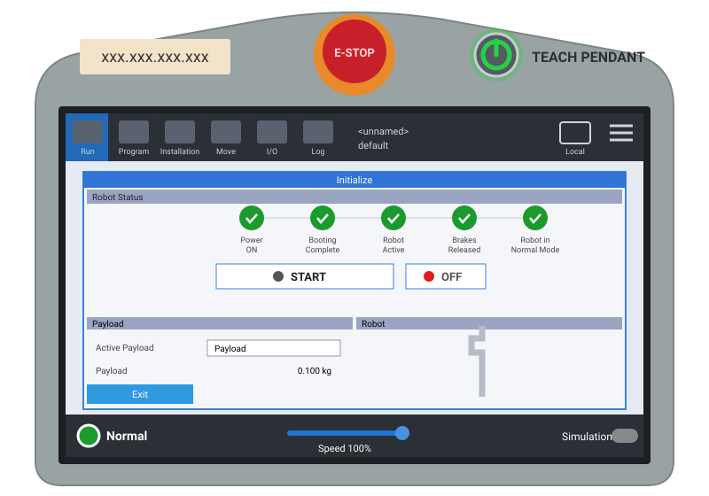
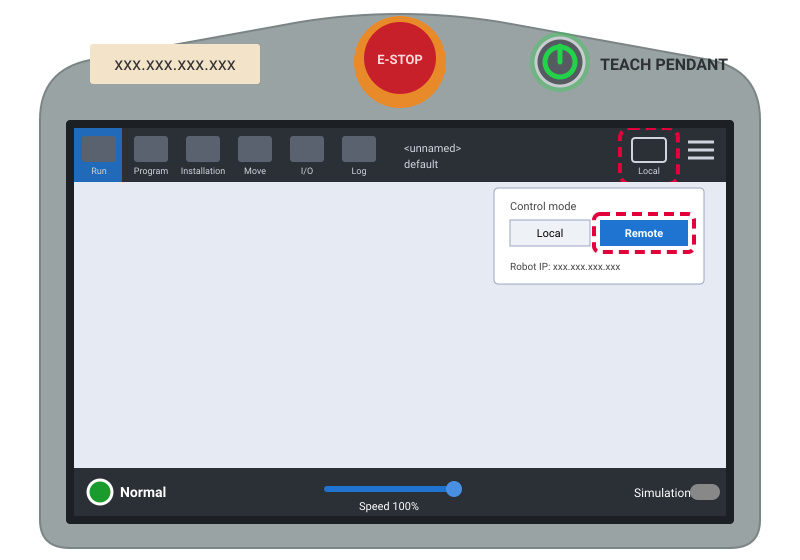

Read before your first run
Safety first. Hardware second.
The UR10e is collaborative, but it is still a heavy 33 kg arm with a 1.3 m reach and 10 kg payload driven by motors. The rules below prevent the failures we have actually seen. The hardware library below is what you have on hand to build with.
The golden rules
01 // Safety
Six rules. They are short. Follow all of them, every session. If you can't remember why a rule exists, ask before you run.
Powering up
02 // Starting the UR10e
Follow these steps on the teach pendant every time you switch the robot on. The highlighted control is the one to tap.








Where your tools live
03 // The Tool Flange
End-effectors mount on wrist 3. The flange has its own electrical connector and provides power, so you don't need cables running the length of the arm.
2 AWhat's in the lab
04 // Hardware library
Filter by category or search by name, spec, or use. Add new
hardware in data.js — it appears here automatically.
Connectivity
05 // Lab network
All robot control assumes you are on the lab Wi-Fi. Outside that network, nothing reaches the controller.
| Setting | Value | Where to find it |
|---|---|---|
| Wi-Fi SSID | robot-wifi |
Label on the physical router in the lab |
| Wi-Fi password | — | Label on the router · ask supervisor |
| UR10e IP | 192.168.x.x |
Teach Pendant → ☰ Menu → About |
| Mode | Remote Control | Teach Pendant → top-right menu |
YOUR_IP) and a local .env file.